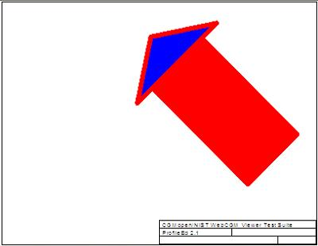
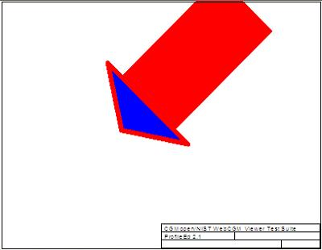
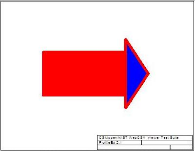

| Source CGM (Replace) | Transformed APS Up Right (Replace) | Transformed APS Down Left (Replace) |
|---|---|---|
 |
 |
| Source CGM (Combine) | Transformed APS Up Right (Combine) | Transformed APS Down Left (Combine) |
|---|---|---|
 |
| Type | Transform 1 | CGM Should look like | Transform 2 | CGM Should look like | Get Transform | Test Result |
| Replace | Translated Up & Right (Replace) | Translated Down & Left (Replace) | Fail/Success | |||
| Combine | Translated Up & Right (Combine) | Translated Down & Left (Combine) | Fail/Success |